🔬 HMRP: Master Research & Visualization Report
Comprehensive Multidisciplinary Analysis, Hierarchical Taxonomies & Cross-Domain Semantic Evaluation
1. Dataset Overview

Papers per Domain Distribution
Figure 1: Distribution of ingested research publications across academic domains in the HMRP corpus.

Proportional Domain Representation
Figure 2: Relative percentage contribution of each scientific discipline to the evaluated corpus.

Corpus Ingestion Summary Metrics
Figure 3: Key extraction and statistical metrics summarizing the size and lexical density of the analyzed papers.
2. TF-IDF Analysis
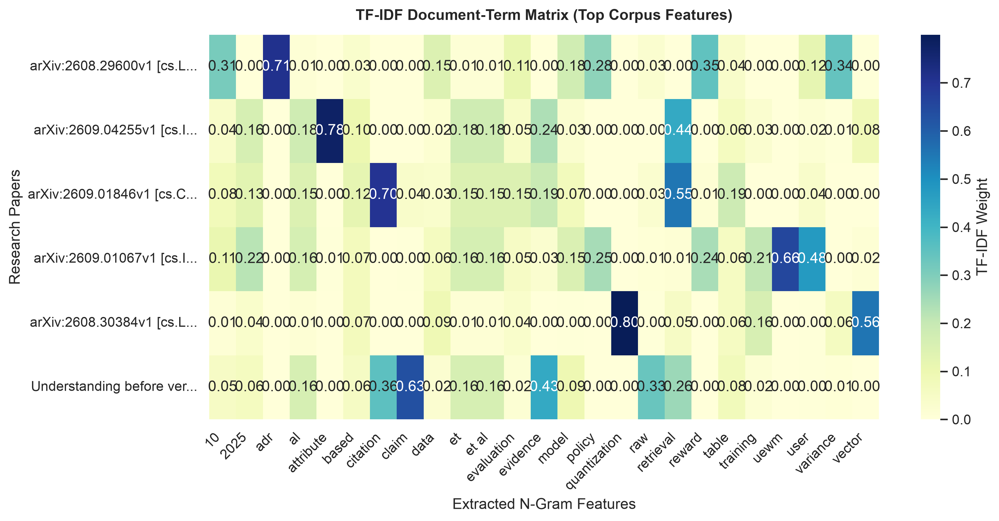
Document-Term Matrix Heatmap
Figure 4: Salient TF-IDF term weights computed across individual research papers.
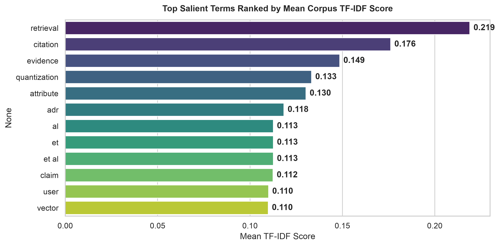
TF-IDF Term Importance
Figure 5: Highest-weighted vocabulary terms extracted via corpus-wide TF-IDF scoring.
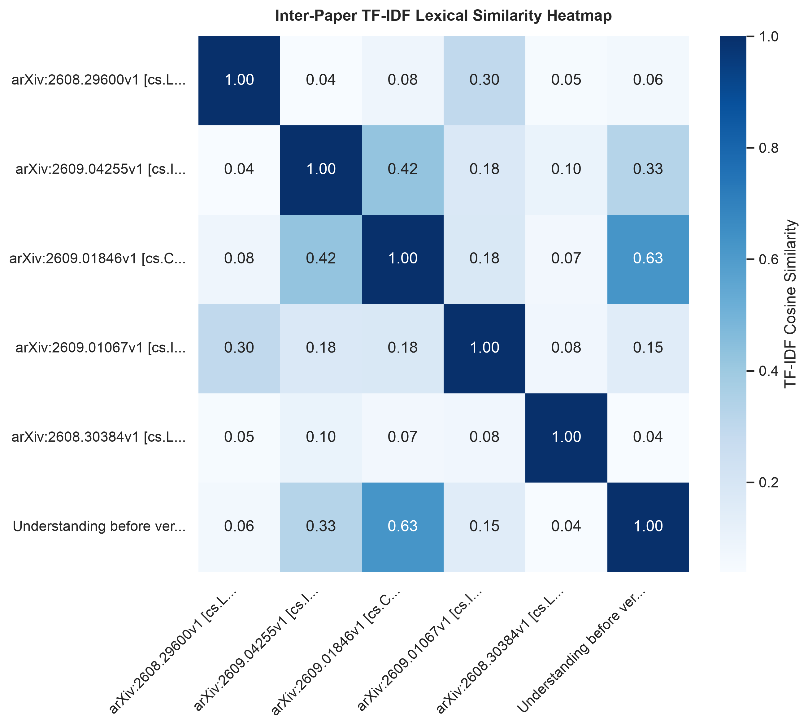
TF-IDF Pairwise Document Similarity
Figure 6: Pairwise lexical similarity matrix between papers derived from TF-IDF vector representations.
Open Interactive Version3. Keyword Extraction
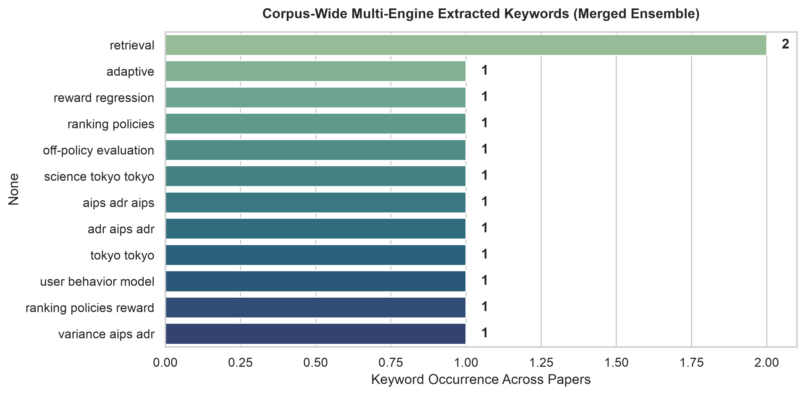
Ensemble Keyword Frequency
Figure 8: High-confidence technical keywords extracted and validated across KeyBERT, YAKE, and TF-IDF.
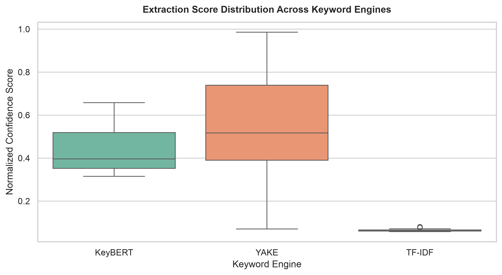
Engine Confidence Score Distribution
Figure 9: Statistical distribution of extraction confidence scores compared across KeyBERT, YAKE, and TF-IDF.
4. Dense Embeddings
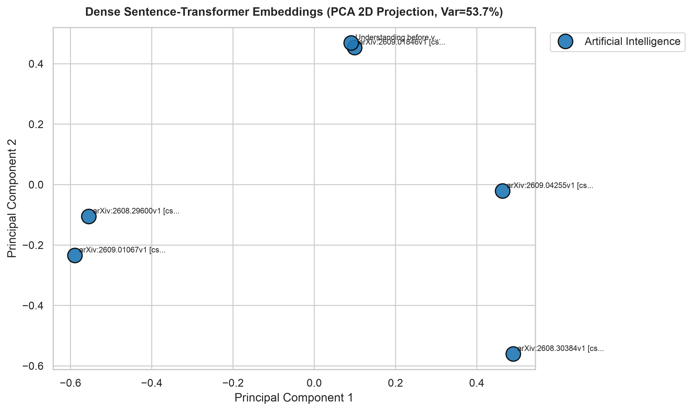
PCA Embedding Projection
Figure 10: 2D Principal Component Analysis (PCA) projection of dense paper embeddings color-coded by domain.
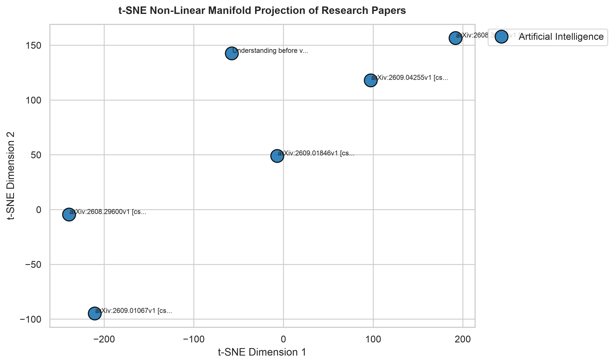
t-SNE Manifold Projection
Figure 11: Non-linear t-SNE clustering illustrating semantic closeness of multidisciplinary publications.
5. Semantic Similarity
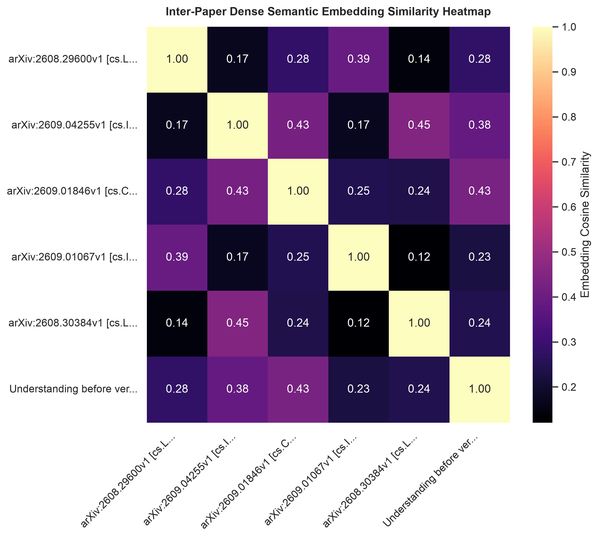
Dense Embedding Similarity Heatmap
Figure 12: Pairwise cosine similarity matrix calculated using deep contextual transformer embeddings.
Open Interactive Version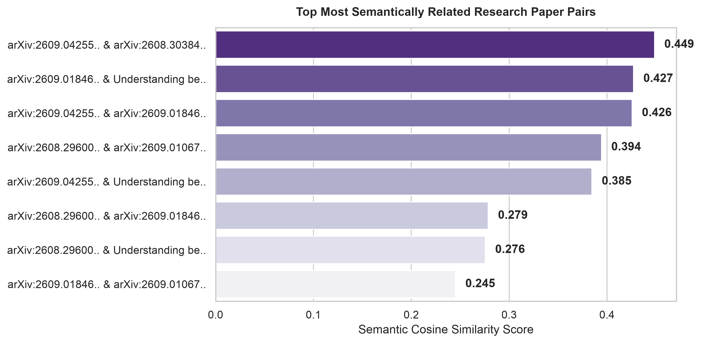
Top Semantically Similar Pairs
Figure 13: Paper pairs demonstrating highest contextual semantic alignment.
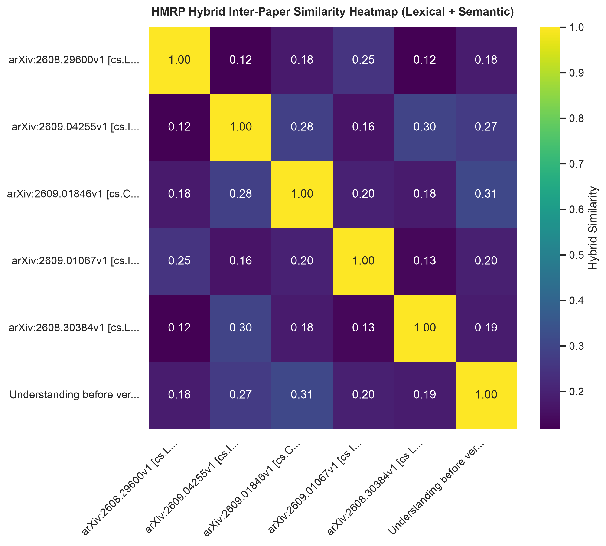
Hybrid Combined Similarity Heatmap
Figure 14: Comprehensive hybrid similarity matrix combining TF-IDF lexical overlap and dense semantic representations.
Open Interactive Version6. Hierarchical Concept Mapping

Concentric Concept Sunburst
Figure 15: Radial multi-tiered concept taxonomy for 'arXiv:2608.29600v1 [cs.LG] 30 Aug 2026'.
Open Interactive Version
Hierarchical Concept Treemap
Figure 16: Nested rectangular concept partitioning for 'arXiv:2608.29600v1 [cs.LG] 30 Aug 2026'.
Open Interactive Version
Top-Down Concept Icicle Diagram
Figure 17: Top-down hierarchical breakdown of technical sub-domains for 'arXiv:2608.29600v1 [cs.LG] 30 Aug 2026'.
Open Interactive Version
Hierarchical Concept Network Tree
Figure 18: Directed graph visualization of parent-child conceptual relationships for 'arXiv:2608.29600v1 [cs.LG] 30 Aug 2026'.
7. Concept Analysis

Top Technical Concepts
Figure 19: Most prominent technical terms and concepts identified across the corpus.

Concept Co-occurrence Associations
Figure 21: High-frequency pairwise concept associations discovered across the paper corpus.
8. Knowledge Graph
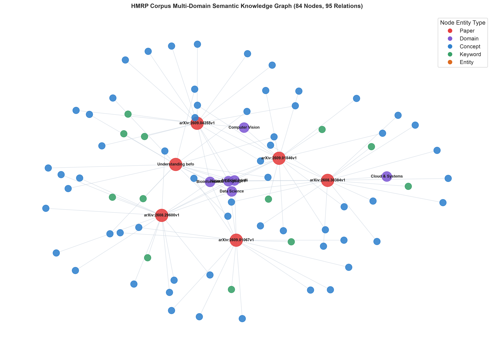
Corpus Semantic Knowledge Graph
Figure 22: Heterogeneous semantic network connecting research publications, academic fields, concepts, and keywords.
Open Interactive Version9. Radial Mind Map
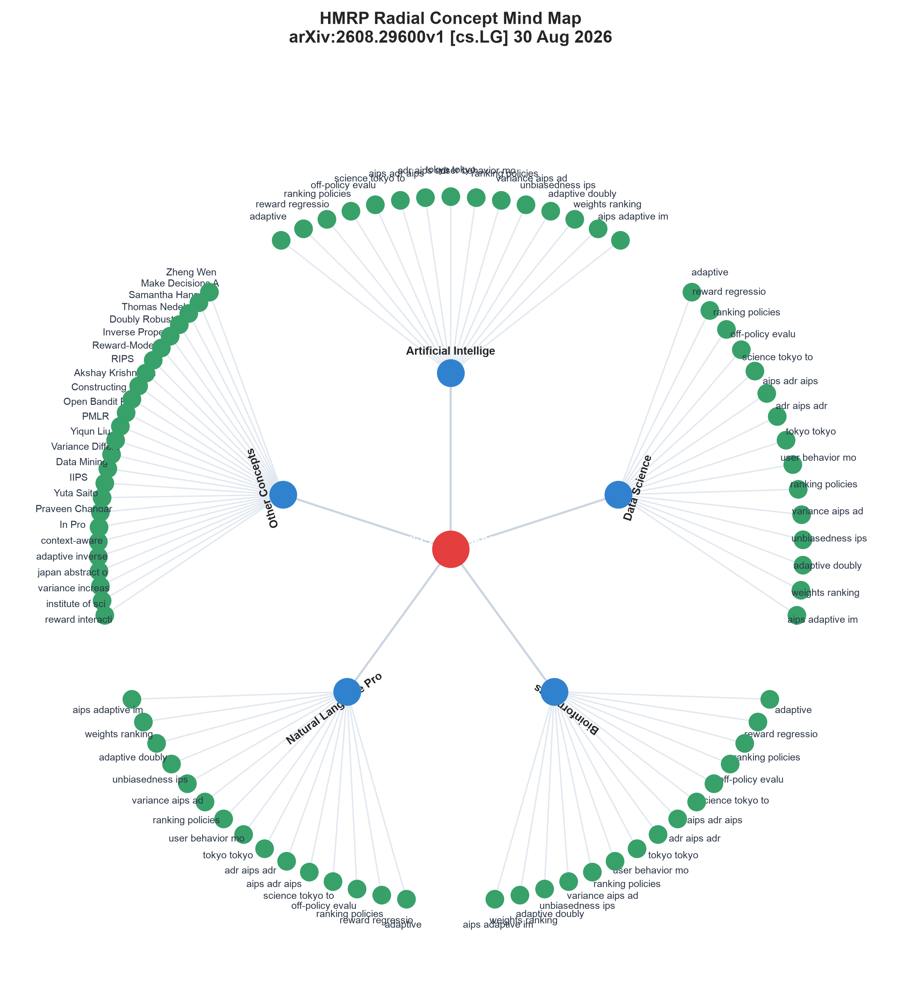
Concentric Concept Mind Map
Figure 23: Concentric radial concept graph illustrating hierarchical topic dispersion for 'arXiv:2608.29600v1 [cs.LG] 30 Aug 2'.
Open Interactive VersionCorpus Synthesis & Cross-Domain Bridges
🌟 Identified Bridge Concepts
| Concept Name | Corpus Frequency | Connected Domains |
|---|
📄 Ingested Publications
| Paper ID | Title | Domains | Concepts | Keywords |
|---|---|---|---|---|
| paper_3ae873a30afd | arXiv:2608.29600v1 [cs.LG] 30 Aug 2026 | Artificial Intelligence, Data Science, Bioinformatics, Natural Language Processing | 60 | 34 |
| paper_771c86b60179 | arXiv:2609.04255v1 [cs.IR] 1 Sep 2026 | Artificial Intelligence, Computer Vision, Natural Language Processing, Bioinformatics | 60 | 30 |
| paper_58d70c57e642 | arXiv:2609.01846v1 [cs.CL] 1 Sep 2026 | Artificial Intelligence, Natural Language Processing, Bioinformatics, Computer Vision | 60 | 31 |
| paper_bf9a4f4052df | arXiv:2609.01067v1 [cs.IR] 1 Sep 2026 | Artificial Intelligence, Natural Language Processing, Bioinformatics | 60 | 30 |
| paper_d00f30e537ab | arXiv:2608.30384v1 [cs.LG] 31 Aug 2026 | Artificial Intelligence, Natural Language Processing, Cloud & Systems, Data Science | 60 | 30 |
| paper_0f68e4dcd72b | Understanding before verifying: Claim normalization for automated citation verification | Artificial Intelligence, Data Science, Natural Language Processing, Bioinformatics | 60 | 30 |